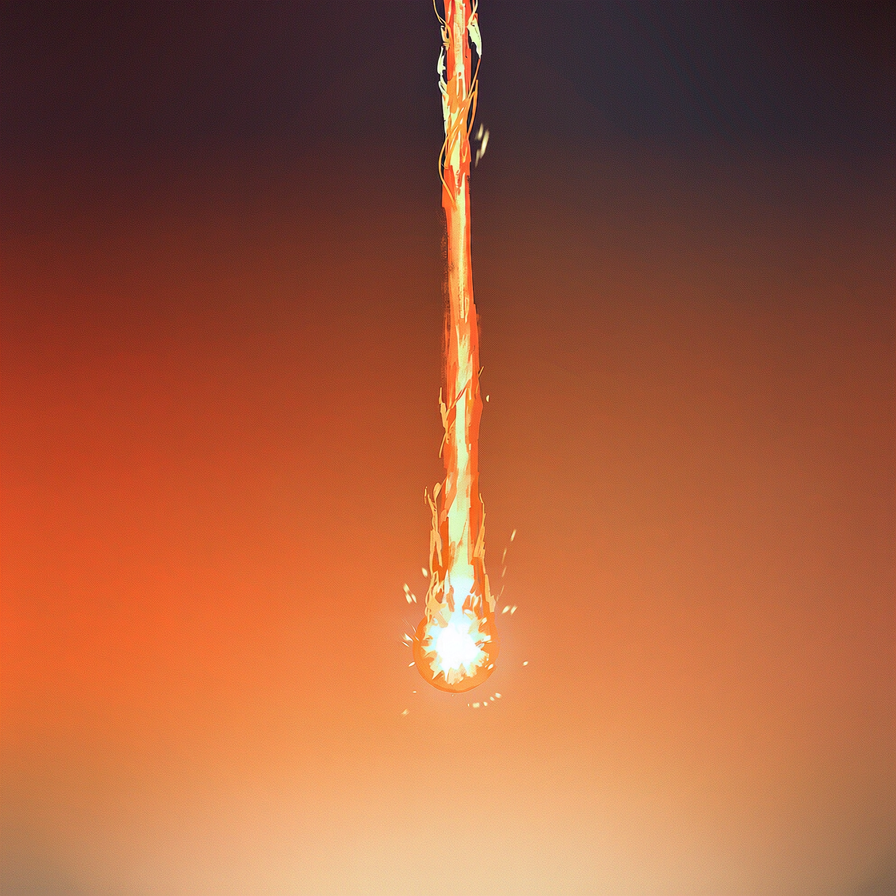
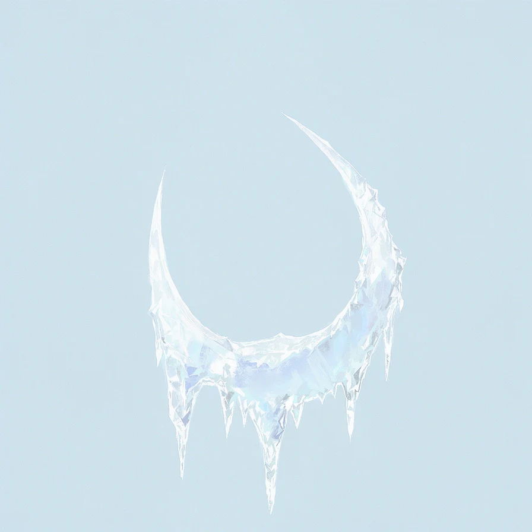
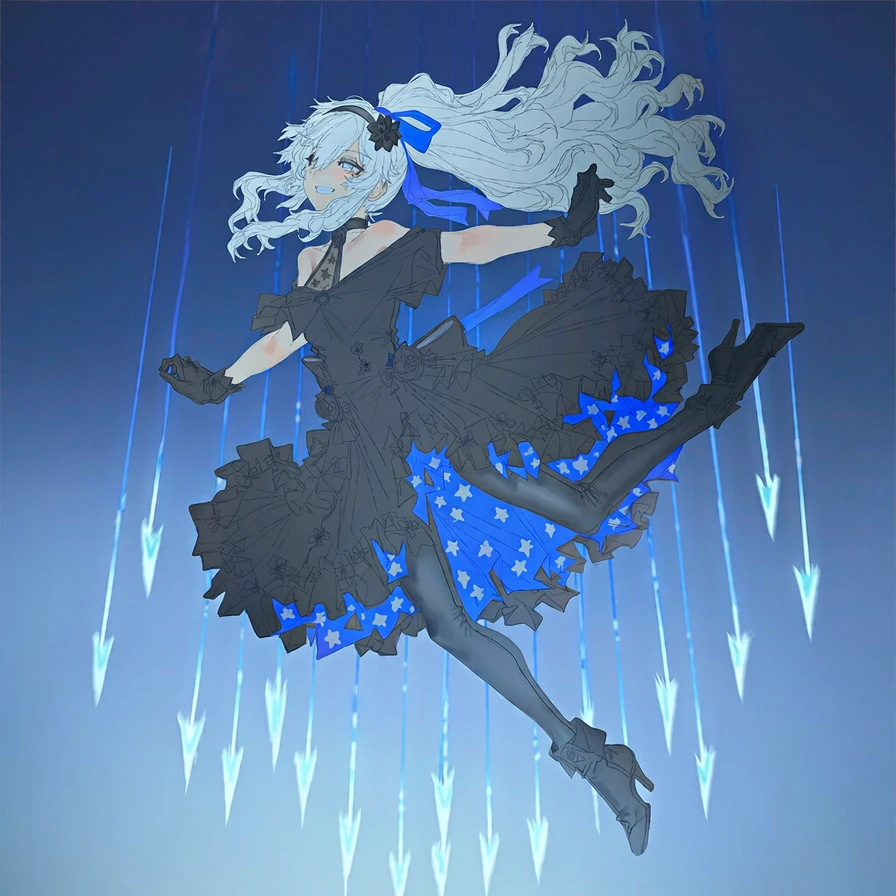
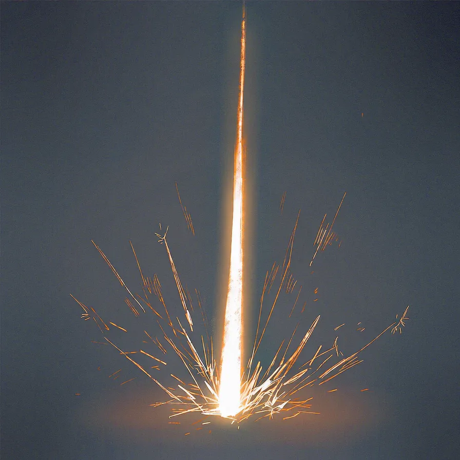
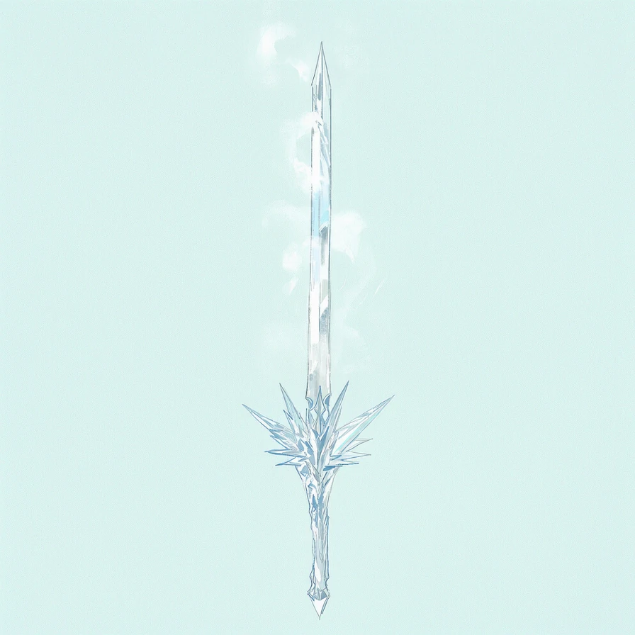
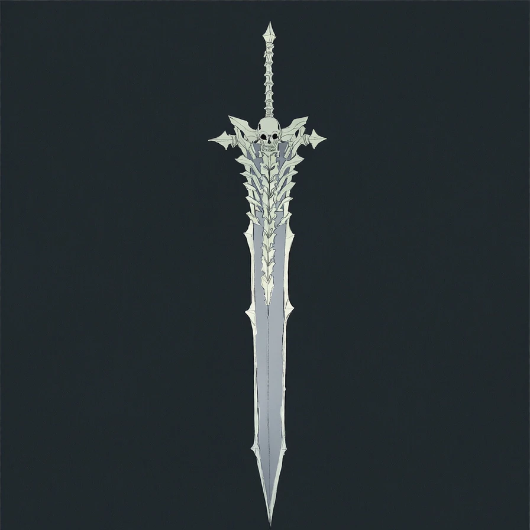
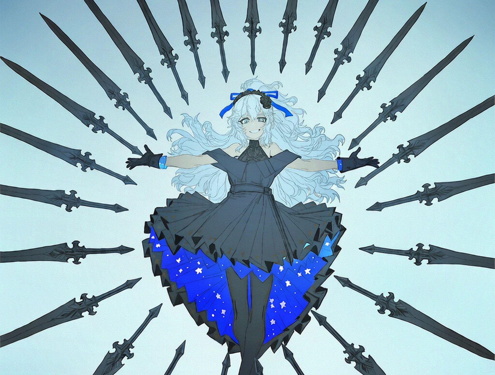
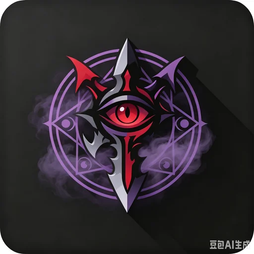

方向修正版：暗色打底；整套卡面只有两种深度——凸起件（横幅 / 费用球 / 铭牌 / 攻徽）与凹陷件（插画窗 / 描述区），共享同一顶部光源。STS2 骨架优点全部保留（0.71 竖版、费用球浮角、横幅、铭牌、稀有度色系、职业色包边），横幅从"丝带"改成倒角铭牌。

造成 4 点伤害（4′）。

攻⁺2，附加冰冻，冻结 2 回合。

攻1，2 段伤害。

发现 1 张其它职业的卡牌并施放。

对冰冻角色伤害 +2。

对战开始时，你的攻击化为 1 张不朽斩。

万剑归宗：抽 5 张牌，充能 +1。

无定横行：将四张禁咒洗入牌库，然后抽 2 张牌。
※ 血苑修罗仍用现状回退图（512 徽章风）做"待补图"对照；插画窗下沉+暗底后，亮背景插画（寒冰剑）与暗背景插画（不朽神剑）都被窗框统一收拢。
现状 · 2.3 扁横：图被裁成横条，费用/稀有度/职业无载体
造成 4 点伤害（4′）。
新 · 暗色立体竖卡：四要素各归其位、有体积
攻⁺2，附加冰冻。
造成 4 点伤害。
抽 5 张牌，充能 +1。
对冰冻角色伤害 +2。
发现 1 张其它职业的牌并施放。
悬停任一张看上浮选中。倒角铭牌左右不过分突出，叠层时仍然可读。
| 职业 | 主色 | 亮 / 主 / 暗（渐变三档） |
|---|---|---|
| 战士 | 赤铁 | #e8ab93 / #bd6a53 / #6d3826 |
| 侠客 | 青竹 | #a3cdb0 / #5c9a70 / #31573f |
| 法师 | 霁青 | #9dc0e2 / #5d84b1 / #33506f |
| 牧师 | 鎏金 | #e6c98e / #bb914a / #6b5124 |
| 降临者 | 藤紫 | #c1a7e0 / #8a68b8 / #4a3768 |
| 无职业 / 衍生 | 青灰 | #bcc5cc / #7f8a94 / #485159 |
| 稀有度 | 横幅 | 亮 / 主 / 暗 |
|---|---|---|
| 初始 | 石灰 | #9aa4ad / #78828c / #4d565f |
| 古朴 | 陶铜 | #c9a271 / #9a7648 / #5e4526 |
| 职业 | 钢青 | #adbac5 / #7f8d9b / #4e5a66 |
| 稀有 | 黛蓝 | #87aed2 / #4f7aa6 / #2c4a67 |
| 史诗 | 紫晶 | #b18ad0 / #7d5496 / #483059 |
| 传说 | 鎏金 | #daa94e / #a8761f / #5e3f0e |
| 衍生 / 诅咒 | 暗藤紫 | #8d7fa3 / #5e5170 / #362d43 |
| 棱彩 | 棱镜 | 横幅底换棱镜渐变，倒角与高光不变 |
| STS2 官方量测（card.tscn） | 本方案映射 |
|---|---|
| 卡体 300×422 | aspect-ratio 300/422；手牌 152 / 标准 220 / 悬停 ×1.17 |
| 插画窗 250×190 | .artwin 宽 91%、高 46%、下沉式、7px 圆角 |
| 横幅 327×83 突出卡外 | .banner 倒角铭牌 31px 高、顶缘高光+底缘暗边+下投影、刻印文字 |
| 费用球 64×64 浮角 | .orb 立体晶球 40px + 职业色金属环；能量不足换红晶 |
| 类型铭牌 61×37 | .plaque 金属小牌、横跨插画下缘 |
| 描述区 243×136 | .desc 下沉面板；关键字=职业色亮档、数字 Georgia、暗底金字 |
参考来源：STS2 逆向（scenes/cards/card.tscn、materials/cards/frames）· 卡面资产审计（.tmp/card-audit/）· v3/v4 定调稿存档于同目录。本稿卡面均引用 ../../game/assets/ 现役实图。